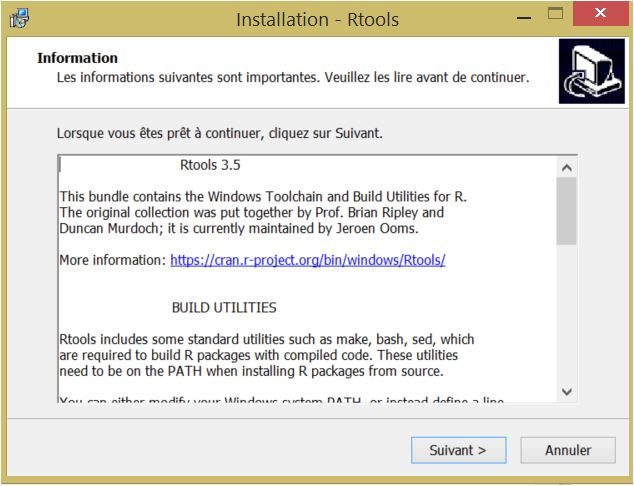
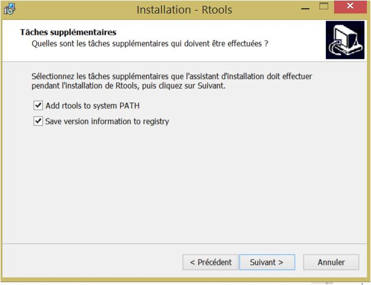
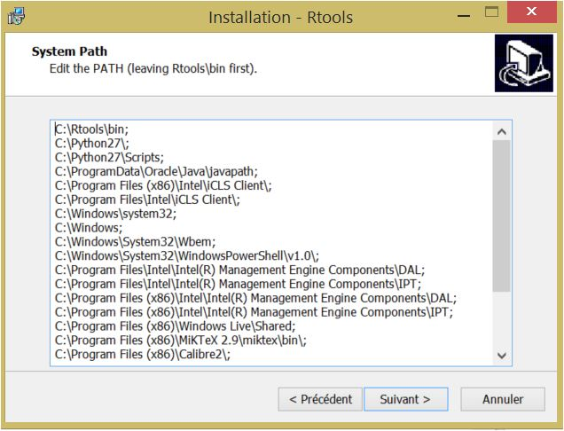

A post from data.visualisation.free.fr
Installing gganimate, a piece of cake…
gganimate is an appealing package I really wanted to try, but for that I needed first to install it on my windows machine. That was not easy but here is the successful (but time consuming) story of this installation. gganimate is NOT available on CRAN yet but can be installed, as many developers’ packages using devtools pointing to the GitHub repository of thomasp85 (alias Thomas Lin Pedersen). For the occasion, I first updated R to the current (3.5.1) version. The instruction for installing gganimate as read on thomasp85’s readme.md is:
# install.packages('devtools')
devtools::install_github('thomasp85/gganimate')My post would have been short and uninteresting if that simple instruction was successful. After several dependency package installation, I get the following quite unambiguous message:
* removing 'C:/Users/Xtophe/Documents/R/win-library/3.5/gganimate'
In R CMD INSTALL
'Installation failed: Command failed (1)'I will go directly to the solution, avoiding the reader to follow my time-consuming, nerve-streching tribulations on the web. The one thing that was missing was Rtools, which is not an R package but a utility required to build R packages, and gganimate needs that.
gganimate needs Rtools for its installation…
Since Rtools is NOT an R package, its installation under Rstudio can be tricky, but I found out that using installR (an R package used to help updating R) may simplify the process. So the first trick is to use installR to install Rtools:
library(installR)
install.Rtools()This is quite a lengthy process, with many windows prompts. I opted for the latest version (3.5) and let the system option by default (install in C:/Rtools/).
  
I read carefully the installation messages and checked all the elements that seemed to be useful such as adding rtools to system path. I will come back to that later on.
The installation went fine, but the instruction:
devtools::install_github('thomasp85/gganimate')still ended-up with several error messages and a definitive:
'Installation failed: Command failed (1)'… and Rtools does not install smoothly on Windows/Rstudio
This is where a second trick must be used, as I found out very lately. It seems that there is a quirk about running Rcpp (and Rtools) on Windows through RStudio. For whatever reason (you do not want to know), the installation of Rtools on Windows/Rstudio does not add the right path to the working environment. So one must add it manually. For me, with Rtools installed in C:\Rtools, the following line of code worked well:
Sys.setenv(PATH = paste(Sys.getenv("PATH"), "C:/Rtools/bin/",
"C:/Rtools/mingw_64/bin", sep = ";"))
Sys.setenv(BINPREF = "C:/Rtools/mingw_64/bin/")End of the story? Not yet. One must first restart R (restart Rstudio) before running again:
devtools::install_github('thomasp85/gganimate')and finally get:
* DONE (gganimate)
In R CMD INSTALLNow gganimate is working, and I’m beginning to enjoy it, finally. I hope it was worth the trip.